Curvas Cónicas y su Geometría
| Área | Geometría Analítica |
| Tipos | Circunferencia, Parábola, Elipse, Hipérbola |
| Origen | Sección de un cono con un plano |
| Herramienta | GeoGebra, Desmos |
| Técnica clave | Completar el cuadrado |
| Forma general | Ax²+Bxy+Cy²+Dx+Ey+F=0 |
¿Qué son las curvas cónicas?
Las cónicas son curvas que se obtienen al cortar un cono doble con un plano. Dependiendo del ángulo de corte, obtenemos cuatro figuras distintas: la circunferencia, la elipse, la parábola y la hipérbola.
En geometría analítica, cada una tiene una ecuación característica que relaciona las coordenadas x e y de todos sus puntos. La clave para trabajar con ellas es aprender a identificarlas y a transformar su ecuación de la forma general a la forma estándar.
Las cuatro cónicas de un vistazo
Caso especial de elipse donde ambos ejes son iguales. Todos los puntos equidistan del centro.
(x−h)² + (y−k)² = r²Equidista de un punto fijo (foco) y una recta fija (directriz). Abre hacia un lado.
(y−k)² = 4p(x−h)La suma de distancias a dos focos es constante. Tiene eje mayor y eje menor.
(x−h)²/a² + (y−k)²/b² = 1La diferencia de distancias a dos focos es constante. Tiene dos ramas y asíntotas.
(x−h)²/a² − (y−k)²/b² = 1Circunferencia (El Círculo)
Es el lugar geométrico de todos los puntos que están a la misma distancia r (radio) de un punto fijo llamado centro (h, k). Es un caso particular de la elipse donde los dos ejes son iguales.
Forma estándar
Su ecuación canónica es:
Donde (h, k) es el centro y r es el radio. Cuando el centro está en el origen, se simplifica a x² + y² = r².
Parábola
Es el lugar geométrico de los puntos que equidistan de un punto fijo llamado foco y de una recta fija llamada directriz. Su ecuación general más conocida es y = ax² + bx + c.
Formas estándar
Dependiendo de la orientación de apertura:
(y−k)² = 4p(x−h)
(x−h)² = 4p(y−k)
El vértice es (h, k) y p determina la distancia al foco. Si p > 0 abre a la derecha/arriba; si p < 0 abre a la izquierda/abajo.
Elipse
Es el lugar geométrico de los puntos tal que la suma de sus distancias a dos puntos fijos llamados focos es siempre igual a una constante 2a. Sus elementos son: centro (h,k), eje mayor (2a), eje menor (2b) y distancia focal (2c).
Forma estándar
Relación fundamental: c² = a² − b². Si a² > b², el eje mayor es horizontal; si b² > a², el eje mayor es vertical.
Hipérbola
Es el lugar geométrico de los puntos tal que la diferencia (en valor absoluto) de sus distancias a dos focos es constante e igual a 2a. Se distingue visualmente por tener dos ramas separadas y unas líneas guía llamadas asíntotas.
Forma estándar
Las asíntotas son las rectas y − k = ±(b/a)(x − h). La hipérbola se aproxima a ellas infinitamente sin tocarlas nunca.
Ejercicios resueltos — Kevin Gómez
Estos ejercicios parten de ecuaciones en forma general y las transforman a forma estándar mediante la técnica de completar el cuadrado.
Ecuación general:
Para x: (4÷2)² = 4 · Para y: (6÷2)² = 9. Se suman a ambos lados.
Ecuación general:
Para y: (6÷2)² = 9. Sumamos 9 a ambos lados.
Ecuación general:
Lo que agregamos dentro del paréntesis se multiplica por el factor de afuera: 25×4 = 100 y 16×9 = 144.
Ecuación general:
El término de y se resta por el −16 de afuera: 252 + 36 − 144 = 144.
Ejercicios resueltos — Jonathan Díaz
Estos ejercicios parten de datos geométricos (centros, vértices, puntos) para construir la ecuación de la cónica.
Calculamos el radio usando la fórmula de distancia entre el centro y el punto dado:
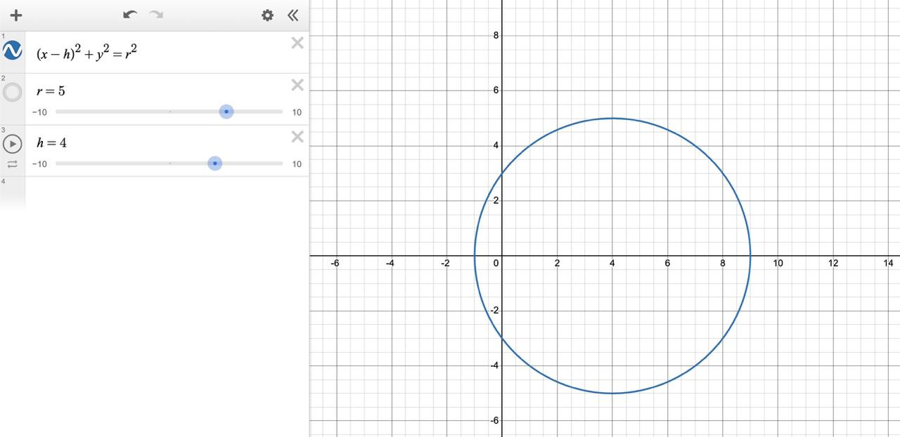
Sustituimos el punto en la forma estándar para encontrar p:
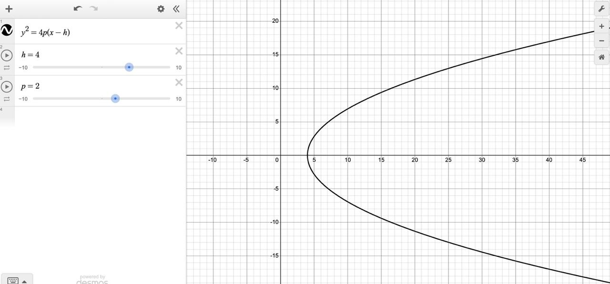
Calculamos a y b midiendo las distancias del centro a los vértices:
Verificación: sustituyendo el vértice (9,0) debe dar 1.
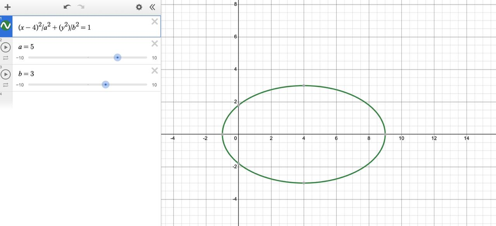
Calculamos a por la distancia centro-vértice, y b por la pendiente de la asíntota b/a:
Verificación sustituyendo el vértice (7,0):
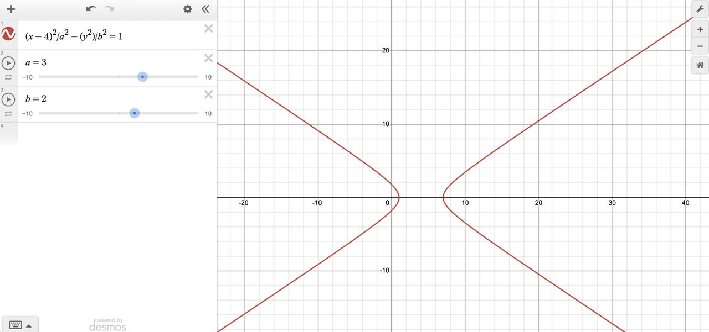
Ejercicios resueltos — Franklin Angulo Jimenez
En esta sección se transforman ecuaciones en forma general a su forma estándar usando completar el cuadrado, para identificar centro, vértice y parámetros principales.
Paso 1: (x² - 2x) + (y² - 2y) = 7
Paso 2: (x² - 2x + 1) + (y² - 2y + 1) = 7 + 1 + 1
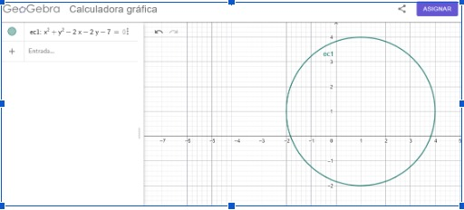
Paso 1: (x² - 2x) = 8y - 9
Paso 2: (x² - 2x + 1) = 8y - 9 + 1
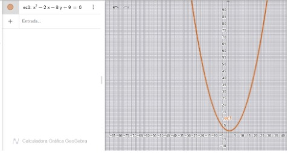
Paso 1: 4(x² - 2x) + 9(y² - 2y) = 23
Paso 2: 4(x² - 2x + 1) + 9(y² - 2y + 1) = 23 + 4 + 9
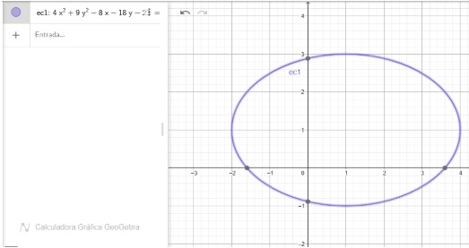
Paso 1: (x² - 2x) - (y² - 2y) = 4
Paso 2: (x² - 2x + 1) - (y² - 2y + 1) = 4 + 1 - 1
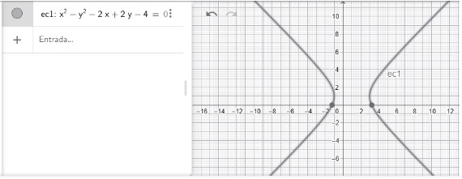
Ejercicios resueltos — Jhener Calvache
En esta sección se resuelven las cónicas partiendo de la ecuación general hacia la forma estándar para identificar sus elementos principales.
Completamos el cuadrado para x: (x² - 8x + 16) + y² = -12 + 16
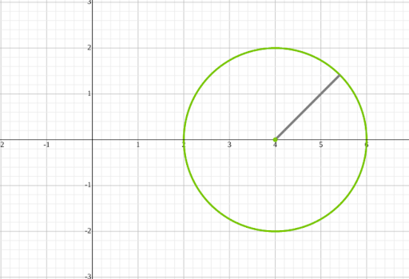
Despejamos y factorizamos: y² = -16(x - 4)
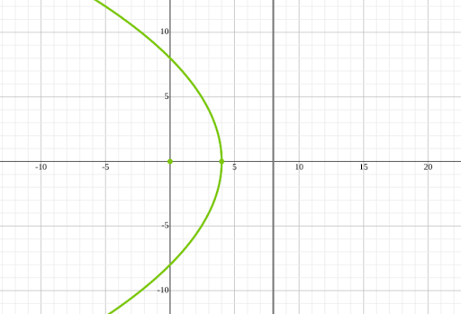
Tras completar cuadrados y dividir entre 36:
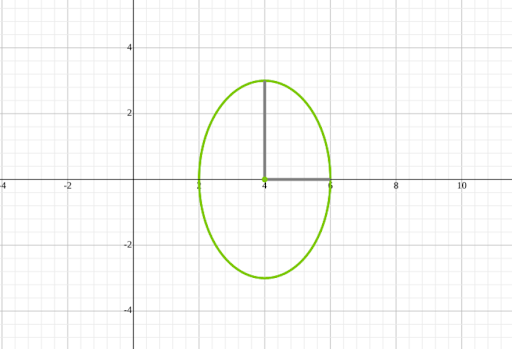
Tras completar cuadrados y dividir entre 144:
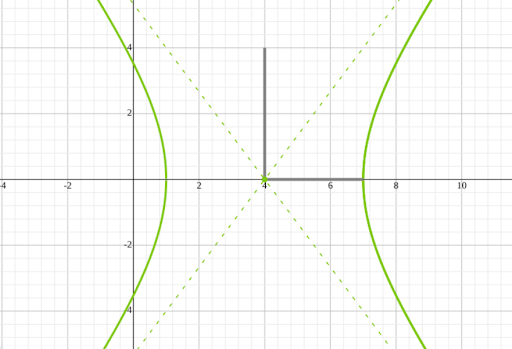
Herramientas TIC para graficar cónicas
Existen herramientas digitales gratuitas que permiten visualizar cónicas en tiempo real. Son muy útiles para comprobar los resultados de los ejercicios.
GeoGebra Clásico
Ingresa la ecuación en la barra alfanumérica (ej. x^2/9 + y^2/4 = 1) y la herramienta genera automáticamente la gráfica. Permite usar "deslizadores" para modificar a, b, h, k en tiempo real.
Desmos
Calculadora gráfica en línea muy intuitiva. Escribe la ecuación en la barra izquierda, presiona Enter y la gráfica aparece de inmediato. También soporta deslizadores y zoom.
→ Abrir DesmosSymbolab
Es una calculadora paso a paso. Se usa ingresando la ecuación general; la herramienta no solo muestra la gráfica, sino que desglosa el proceso analítico de completar el cuadrado.
→ Abrir SymbolabEcuaciones para ingresar en las herramientas
(x-h)^2 + (y-k)^2 = r^2
y = (x-h)^2 + k
(x-h)^2/a^2 + (y-k)^2/b^2 = 1
(x-h)^2/a^2 - (y-k)^2/b^2 = 1
Referencias bibliográficas
- Boyer, Carl B. (2004). History of Analytic Geometry. Dover Publications. ISBN 978-0486438320.
- Lehmann, Charles H. Geometría Analítica. Editorial Limusa. ISBN 978-968-18-1176-1.
- Colera Jiménez, José (2007). Matemáticas II, geometría analítica del espacio. Editorial Anaya.
- Rees, Paul K. (1972). Geometría analítica. Editorial Reverté. ISBN 978-84-291-5110-7.
- Ruiz Sancho, J. M. (2004). Geometría analítica, Bachillerato. Editorial Anaya.
- González Urbaneja, P. M. (2004). Los orígenes de la geometría analítica. Fundación Canaria Orotava.
- Katz, Victor J. (1998). A History of Mathematics: An Introduction. Addison Wesley Longman.
- GeoGebra Clásico. Herramienta dinámica para modelado y graficación de cónicas.
- Wikipedia. "Geometría analítica". Enciclopedia libre con revisión comunitaria.
- Symbolab. Calculadora paso a paso de secciones cónicas y álgebra. https://es.symbolab.com/